ProConnect
Designed for collaboration, not just listings
A platform that helps real estate agents discover opportunities, connect with one another, and turn everyday conversations into qualified leads.
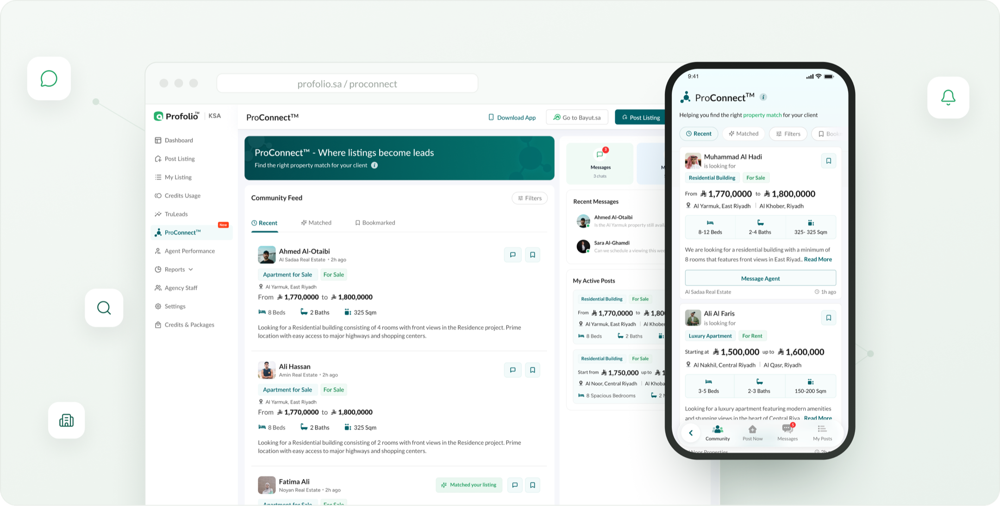
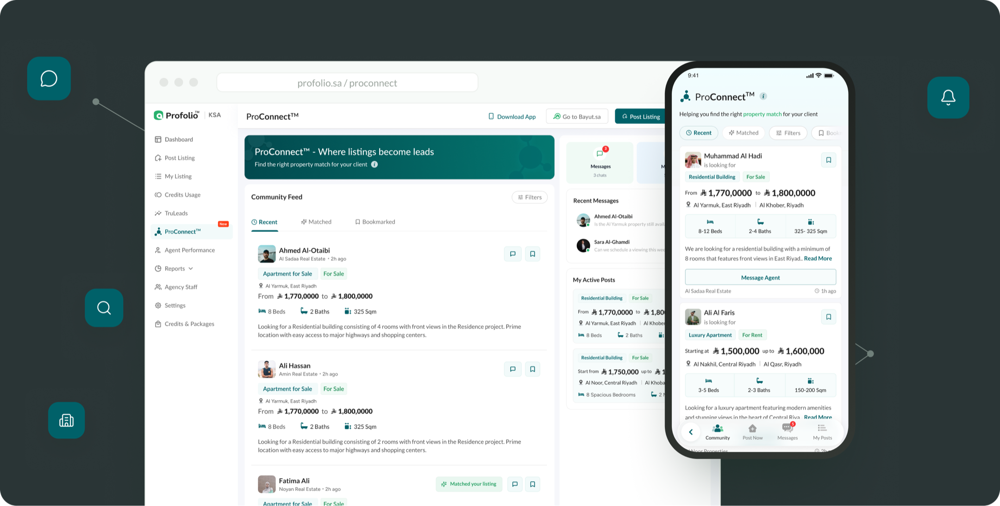
Great marketplaces don't just connect people to properties
Bayut already helped agents publish listings to millions of buyers. But the moment two agents needed to work together to find the right property for a waiting client, the platform stepped out of the room.
ProConnect is the part of Bayut where agents stop competing over listings and start trading opportunities. This case study is about designing that trust between people who have never met.
Agent collaboration
One place to post what a client needs and hear back from other agents the same day, instead of pinging five WhatsApp groups and hoping.
Property matching
ProConnect reads the request and shows you the listings in your own portfolio that actually fit.
Lead generation
When two agents swap contact details, the lead shows up in TruLeads on its own. No copying numbers by hand.
Working together shouldn't mean leaving the platform
Bayut already helped agents publish listings. But finding the right property for another agent's client still ran on WhatsApp groups, phone calls and personal favours. The opportunities were already there. The connections weren't.
Share demand
Post what a client is looking for once, so every agent who can help actually sees it.
Discover opportunities
See posts that match listings you already have, so the right deals stop slipping past you.
Build trusted connections
Give two agents who have never met enough to trust each other and close a deal together.
I started by following the deal, not the brief
I sat with how agents actually hand work to each other, where a request starts, everyone it touches, and the exact point it slips. Workflow analysis, stakeholder mapping, ecosystem mapping, a service blueprint, opportunity mapping: five lenses, and the gaps were hard to unsee.
How a good lead goes missing
Eight steps, no system holding them together. Every handoff happens in a different place, and none of it is ever written down where it counts.
- Agent receives a requirement A client wants a 3-bed villa in North Riyadh.
- Searches their own inventory Nothing on the books fits the brief.
- Asks around on WhatsApp Drops it into three broker groups and waits.
- Makes a round of phone calls Rings the few contacts who might have stock.
- Chases manual follow-ups Notes scattered across chats and a notebook.
- Loses visibility No way to tell who saw it or who replied.
- The opportunity cools Days pass; the client moves on elsewhere.
- No lead recorded Nothing reaches the CRM. The work evaporates.
The biggest challenge was never inventory. It was coordination.
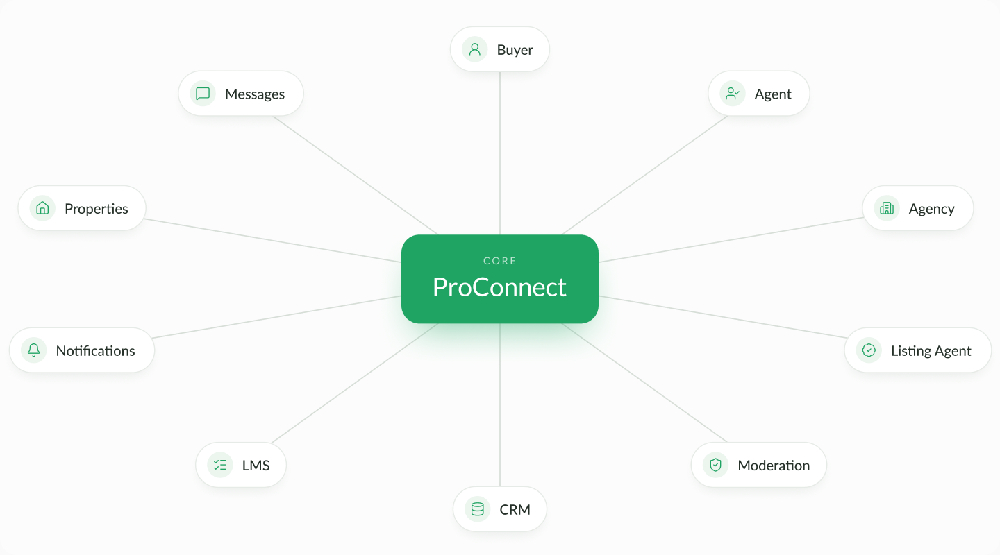
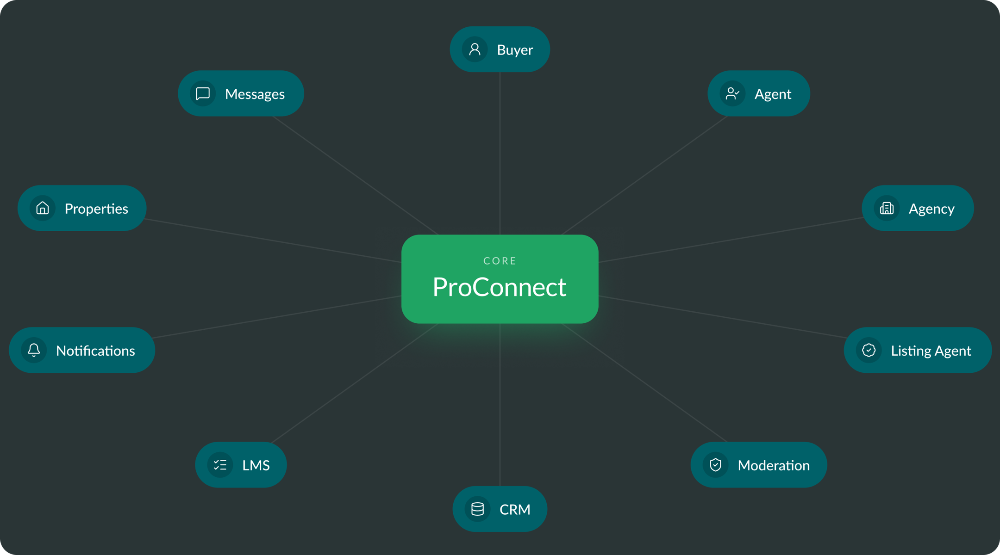
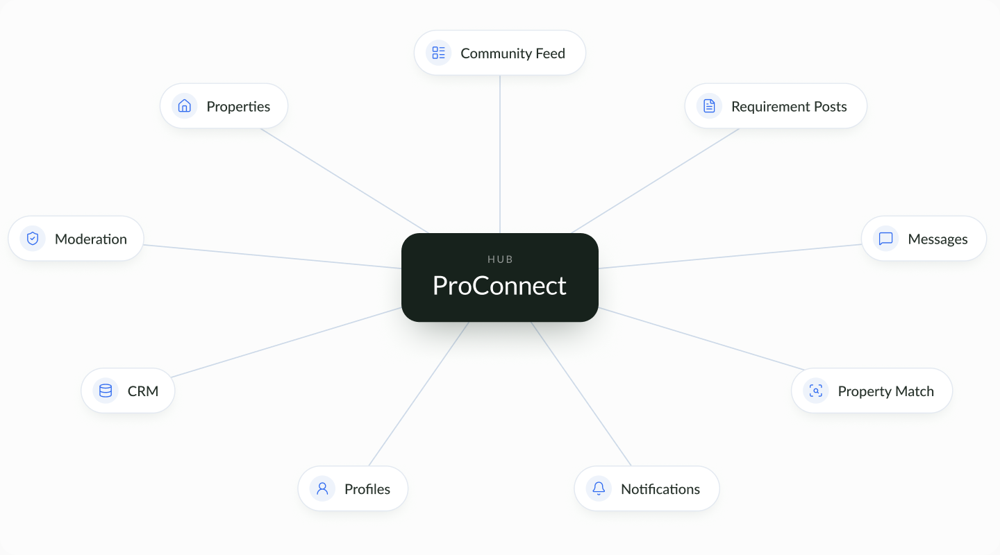
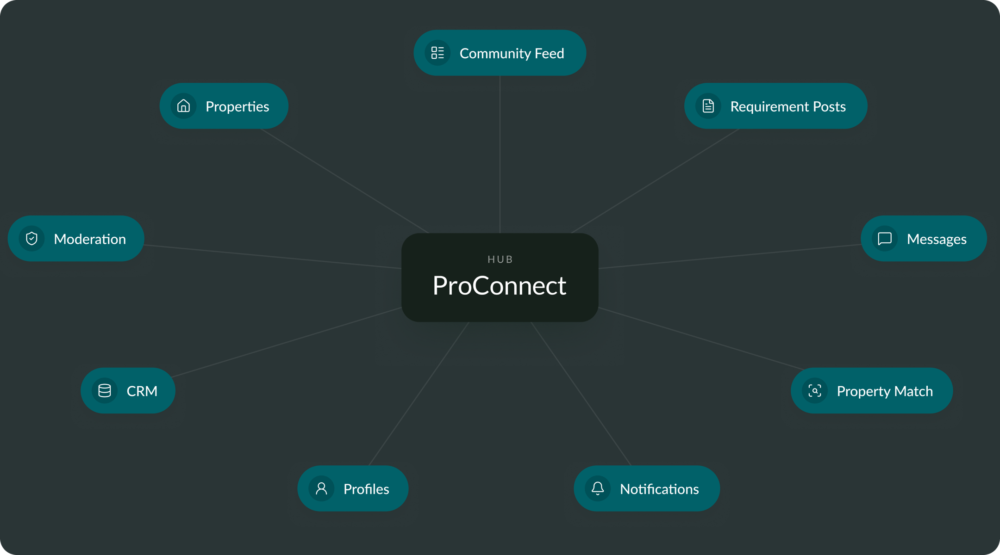
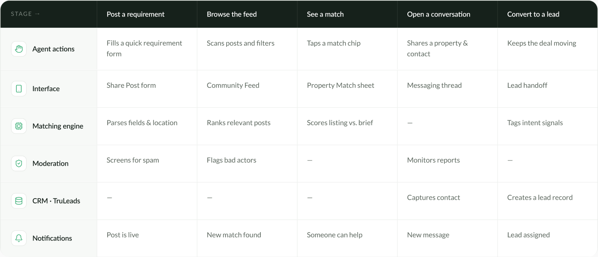
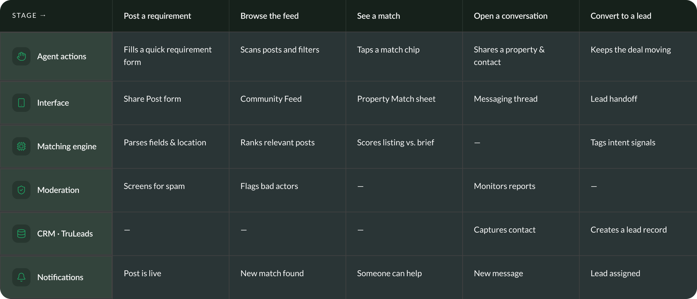
Four gaps. Four places to build.
Sharing
Problem: requirements live in chat threads and an agent's memory.
Opening: a structured post that any agent in the network can answer.
Discovery
Problem: good matches depend entirely on who you happen to know.
Opening: a feed that brings relevant opportunities to the agent.
Matching
Problem: agents eyeball listings against a vague verbal brief.
Opening: the system flags exactly why a property fits a request.
Communication
Problem: a single deal scatters across calls, DMs and email.
Opening: one thread that carries the whole deal end to end.
Open things up to understand. Close them down to decide. Twice.
Discover how agents already collaborate today. Define which opportunities matter most. Develop concepts, fast and cheap. Deliver something that scales with the network.
I didn't compare features. I compared how agents already collaborate.
| Platform | Strength | Weakness | Key takeaway |
|---|---|---|---|
| WhatsApp groups | Instant, familiar, everyone is already there. | Noise buries every real opportunity. | Speed alone isn't collaboration. |
| Facebook groups | Huge reach across local communities. | No matching, no trust, no record. | Reach without relevance wastes time. |
| Private broker networks | High trust between known members. | Closed, small and hard to join. | Trust has to scale past the inner circle. |
| Slack communities | Organised channels and threads. | Built for teams, not for deals. | Collaboration needs a property-shaped home. |
| Bayut ProConnect | Structured posts tied to real listings. | A new behaviour to introduce. | Conversation, matching and leads in one place. |
Every one of these tools was great for talking. None of them was built to move a deal from one agent to the next.
Four rules I kept coming back to
Reduce collaboration friction
If it's any harder than a WhatsApp message, nobody switches.
Surface relevant opportunities
Bring the right deal to the agent instead of making them hunt for it.
Build trust through context
Every profile, listing and reply should earn a stranger's confidence.
Keep every interaction actionable
A view, a reply, a share, each one nudges a real deal forward.
Eight quick ideas. Three made the cut.
I gave myself eight minutes and eight ideas, then asked one honest question of each: would two agents who have never met actually use this to close a deal? The three winners weren't the cleverest sketches, they were the ones that survived that question. Feed, Match and Messaging became the spine of ProConnect; the rest became supporting cast.
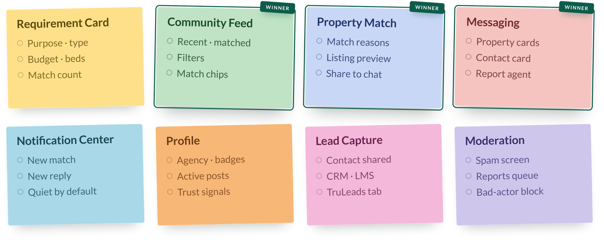
Turning collaboration into product
Every solution follows the same arc: problem, pain point, design exploration, final solution, impact.
01 · Sharing demand, a 30-second Requirement Post
A request that used to vanish in a group chat is now a post the whole network can answer. The same request, given structure: purpose, location, budget and beds, captured once, matched automatically, and answerable by anyone holding the right listing.
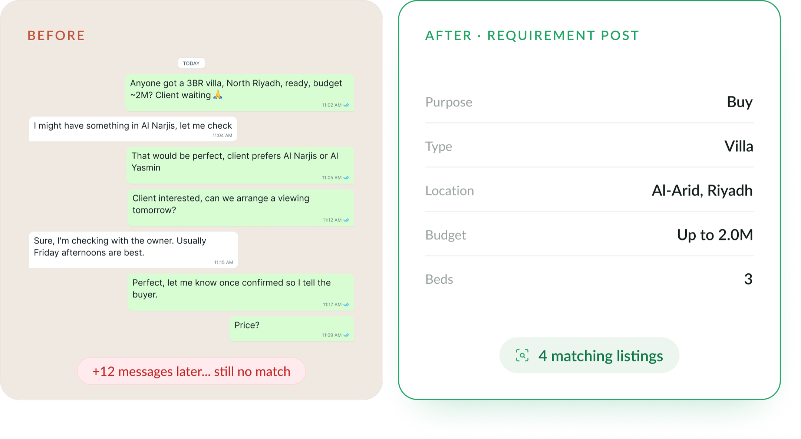
02 · Community Feed, designed for opportunities, not scrolling
Posts that match your inventory rise to the top, sorted for usefulness rather than recency. Filters for purpose, location and budget narrow a wall of posts to the few worth answering. When a listing in your portfolio fits, a match chip says so before you read a word, and who's asking, what they need and how to reach them all travel in one card.
Relevance first
Posts that match your inventory rise to the top, sorted for usefulness, not recency.
Filters that mean something
Purpose, location and budget narrow a wall of posts to the few worth answering.
A match chip on every post
When a listing in your portfolio fits, the post says so, before you read a word.
Context travels with the ask
Who's asking, what they need and how to reach them, all in one card.
03 · Messaging, conversations that move deals forward
The chat isn't really the point, the deal is. Each thread keeps the property, the contact and the next step together, so the whole thing gets done without leaving Bayut.
- Attachments
- Property cards
- Contact details
- Report agent
04 · Lead integration, every conversation becomes a lead
A collaboration only counts if the business can see it. The second contact details change hands, the deal flows into Bayut's existing lead stack. Nothing retyped, no one's credit lost.
- ProConnect chatContact shared
- CRMLead created
- LMSAssigned & tracked
- TruLeadsNew ProConnect tab
05 · Empty states, day one is the hardest screen to design
A new network starts out empty, there is nothing to show on day one. So each empty screen has a job: say what belongs here, then hand the agent the one button that fills it.
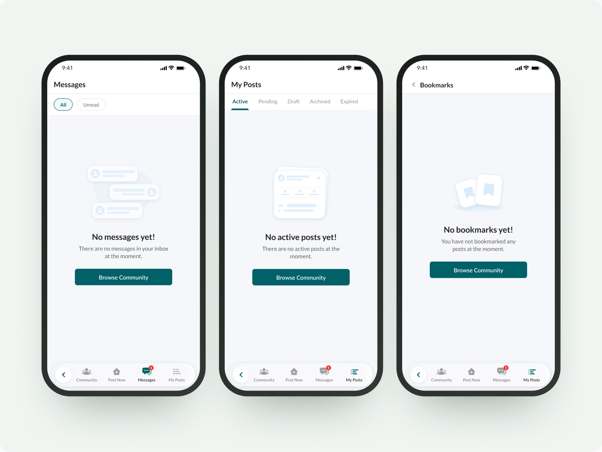
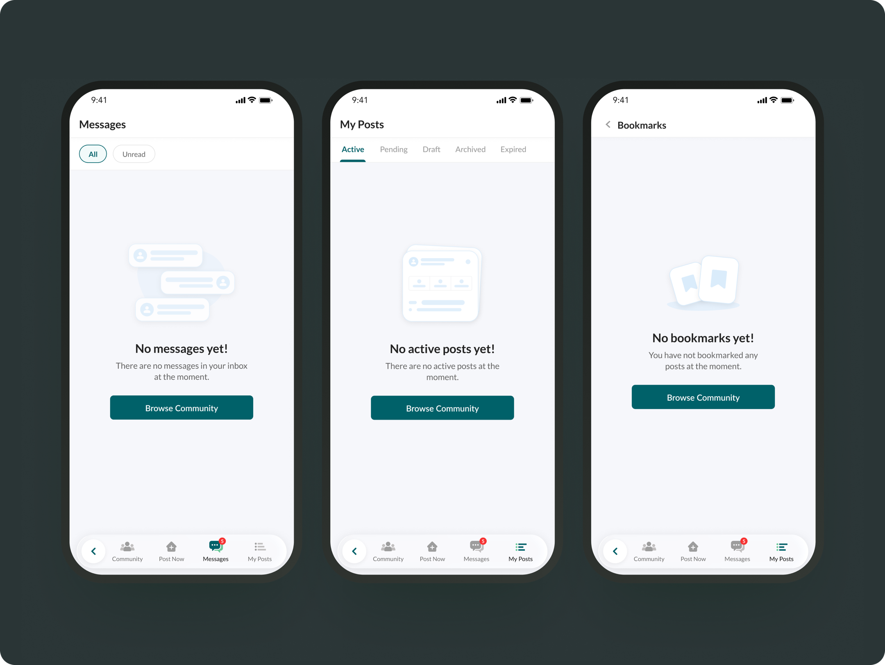
06 · Notifications, a nudge only when it's worth one
Collaboration is time-sensitive. Notifications carry the moments that move a deal, a new match, a reply, a shared property, and stay silent the rest of the time.
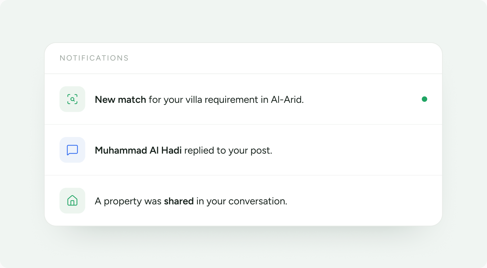
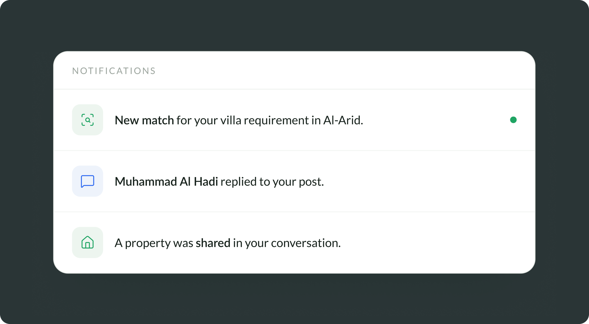
Designed to create better connections
Better discovery
Agents find relevant opportunities without ever leaving Bayut, the deal comes to them.
Higher-quality conversations
Every chat opens with real context attached, so fewer messages get to the point faster.
Scalable collaboration
Trust and moderation grow with the network instead of fighting against it.
Business value
Collaboration that used to evaporate now lands in TruLeads as trackable, qualified leads.
Qualitative outcomes · pre-launch feature.
What this project taught me
Designing ProConnect changed how I think about marketplaces. The successful ones don't just connect people to products, they connect people to one another.
This project reminded me that collaboration isn't created by adding chat or a feed. It comes from giving people enough trust, context and confidence to work together.